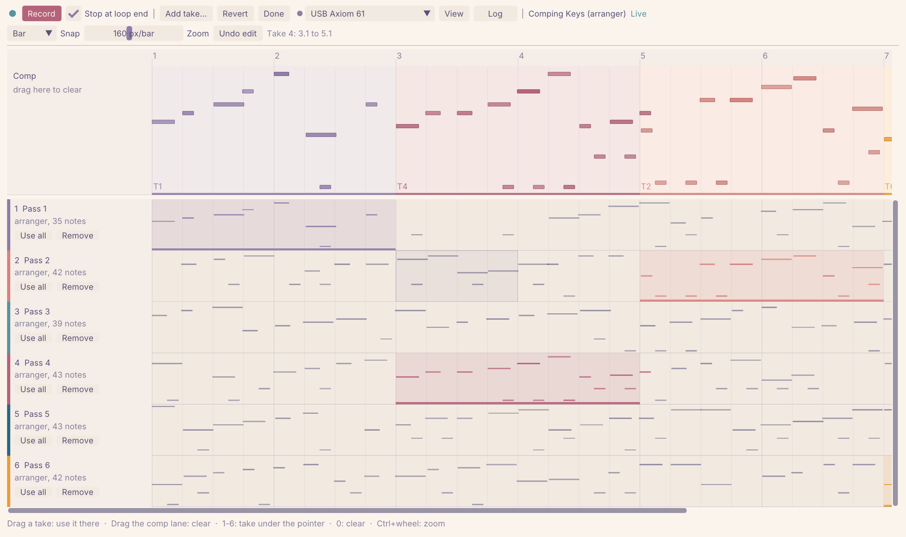
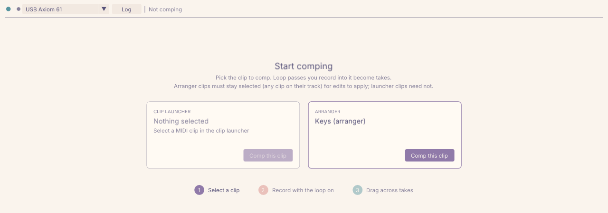
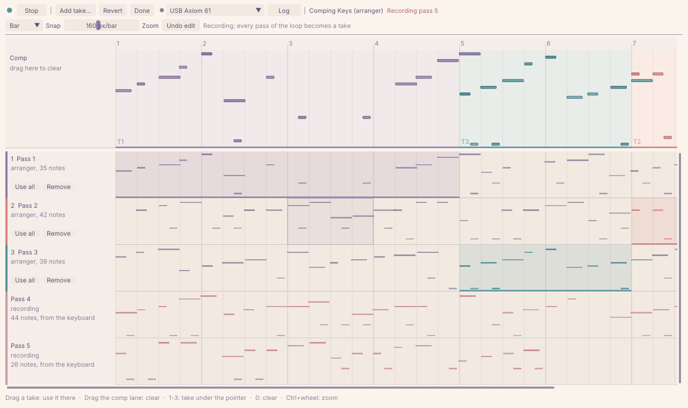
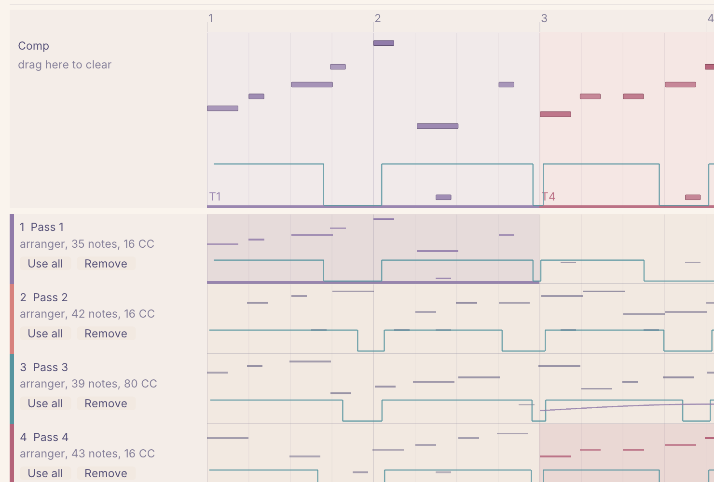
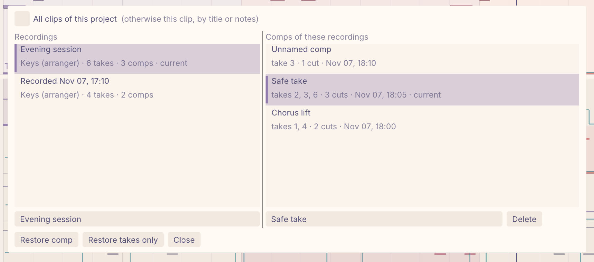

MIDI Comp
Comping for MIDI clips in Bitwig Studio. Record a loop as many times as you like, then cut the best parts of each pass together while the clip updates live.

How it works
1Pick a clip
Select a MIDI clip in the arranger or the clip launcher and start comping it in the companion app. Its current notes become the first take.

2Record loop passes
Set the loop over the clip and press Record. Every pass becomes a take. The passes show up while you play; afterwards the takes keep Bitwig's exact notes wherever Bitwig kept them.

3Drag across takes
Drag across a take to use it for that range, snapped to the grid. The clip in Bitwig is rewritten as you edit, so you hear the comp right away.

What it does
Every pass a take
Without overdub, Bitwig keeps only the latest pass. The companion reads your keyboard with timestamps and rebuilds the passes Bitwig overwrote, typically within a millisecond.
Full note data
Comps carry every note attribute the API exposes: velocities, timbre, pressure, chance, repeats and more, at up to 1/4096 beat resolution.
Saved comps and versions
Comps are saved locally as you work. Name them, keep recordings and the comps cut from them apart, and continue in a copy of the clip.
Looks like Bitwig
The app follows the colors of the Bitwig Theme Editor and picks up changes without a restart.
Linux, macOS, Windows
A Bitwig controller extension plus a native companion app, built for all three platforms. Nix users get a flake.
Open
MIT licensed. The extension serves a small local HTTP API, documented for anyone who wants to build on it.

Install
- Download
MidiComp.bwextensionand the companion for your platform from the releases. - Copy the extension to
~/Bitwig Studio/Extensions/and add Utility › MIDI Comp under Settings › Controllers. - Start the companion. It finds the extension on its own; pick your keyboard in the toolbar.
This is an alpha, largely written with the help of LLMs. It works for its author on Linux with arranger clips; other setups are less tested. Saved comps make it hard to lose work, and bug reports are welcome on GitHub. The README has the details, including how to share one keyboard between Bitwig and the companion.